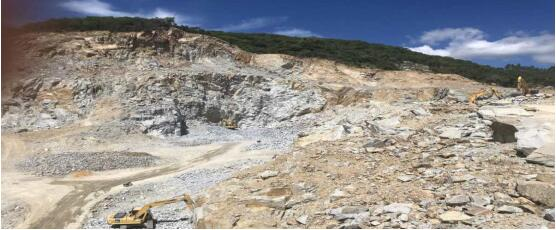
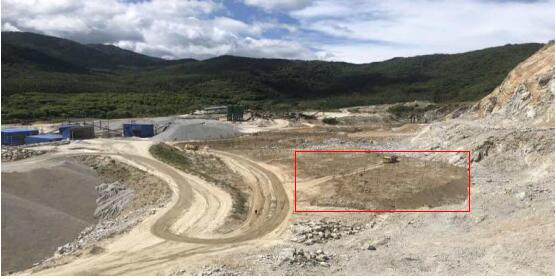

海南东方市平时不动真格 急时先停再说 矿山生态依然破坏严重
海南省东方市好德实业有限公司生态环境问题是2017年第一轮中央环境保护督察交办的信访案件。2019年7月15日，中央第三生态环境保护督察组进驻海南省的第二天，又收到群众举报并交由东方市调查处理，东方市于7月19日办结并反馈督察组。7月25日，督察组下沉东方市发现，东方市对两轮督察交办的信访案件整改不力，好德实业有限公司采石场长期野蛮开采，生态破坏严重，群众投诉不断。为应对督察组下沉督察，东方市于7月24日要求企业停产停运。
一、基本情况
好德实业有限公司采石场于2014年投产运行。2017年，第一轮中央环境保护督察进驻期间，群众对该企业噪声、扬尘污染和生态破坏问题反映强烈，是督察组交办的重点群众信访案件。东方市接办案件后，回复称群众投诉基本属实，要求企业停产整改，并于2017年9月10日上报办结。这次督察期间该企业再次被群众举报，东方市公示称已于7月19日办结。督察发现，东方市对该案件的办理不严不实，整改要求大部分落空，企业甚至仍在顶风扩建，生态破坏加剧，群众反映依旧强烈。
二、主要问题
停产整改成为一纸空文。第一轮中央环境保护督察交办案件后，针对采石场的生态环境问题，东方市要求企业严格执行开发利用方案和恢复治理方案，加大环保设备投入，确保减噪、控粉尘设施运行正常、符合标准，并在2017年7月至10月间，累计对该企业下达停产通知3份；于2018年4月14日，对该企业再次下达责令停产停运继续整改的通知。督察组现场调查发现，该企业在被数次责令停产停运后，均未见复产核查验收，长期继续生产运行，停产通知成为一纸空文，相关违法开采行为不但未得到纠正，甚至还在顶风新建生产设施。2016年3月企业未经审批建设的两条机制砂生产线非法生产至今，又于2019年4月未经审批新建稳定土搅拌站一座，并投入运行。长期不规范的开采方式，使得多个已开采面形成高陡边坡，矿区生态破坏十分严重。

图1 长期野蛮开采导致山体生态破坏严重
**环境修复避实就虚，敷衍了事。**《矿山地质环境保护规定》明确规定，矿山地质环境保护与治理恢复工程的设计和施工，应当与矿产资源开采活动同步进行。该区域开采项目投产于2014年，但生产5年多来，环境恢复方案一直被束之高阁，在2017年中央环保督察组交办相关信访案件后，企业仍旧置之不理，直至2019年7月，第二轮中央生态环境保护督察进驻前夕，才草草开始恢复治理工作。现场督察发现，恢复治理未按实施方案要求实行“梯级降坡减载”，未对台阶、平台、边坡等进行复绿；而是避实就虚、敷衍了事，仅在入场道路两侧和稳定土车间旁等显眼区域象征性地补种一些苗木，作表面文章。
图2 2019年7月督察进驻前，在平坦显眼位置覆土栽种的苗木
**平时不作为，急时先停再说。**第二轮中央生态环境保护督察进驻海南省前，督察组通过正式文件、进驻讲话等多种形式，反复强调禁止环保“一刀切”，并明确要求严格禁止“一律关停”“先停再说”的敷衍应对做法，坚决避免紧急停工停业停产等简单粗暴行为。但督察发现，2017年第一轮中央环境保护督察以来，东方市对好德实业有限公司采石场的生态环境问题一直疏于监管，整改要求至今未落实到位。2019年1月至7月，东方市自然资源和规划局历次现场检查记录中，也均未反映企业存在执行矿山开采利用方案不严，地质环境问题突出等情况，直到7月24日督察组下沉该市前一天，才指出企业矿山地质环境问题较为突出，并紧急向企业下达停产停运通知，明显存在平时不作为、急时乱作为的问题。三、原因分析
2017年以来，东方市委、市政府主要领导针对矿山生态环境整治问题多次召开会议研究，多次调研督办。2018年5月7日，东方市人民政府还印发采石场关停复绿工作实施方案，对目标任务、工作措施、工作步骤、工作要求均做了详细部署，明确了责任分工，并要求牵头责任单位在2018年12月形成总结报告报市政府。但直到这次督察时，牵头责任单位总结报告仍未上报，市政府也未对实施方案完成情况进行跟踪督办，以文件落实整改，工作浮于表面，存在明显的形式主义、官僚主义问题。
东方市对中央生态环境保护督察交办信访案件重视不够、认识不足，没有贯彻以人民为中心的发展思想，没有树牢新发展理念，在矿山生态环境整治中，全市各级、各相关部门普遍存在重生产、轻保护的思想，对生态环境违法违规问题“睁只眼、闭只眼”，执法偏松偏软、走过场，纵容了企业的违法行为。
督察组还将根据有关要求，进一步核实情况，查清问题，依法依规做好后续督察工作。
本文信息来源国家生态环境部
原文编辑: EHS资讯
原文链接: https://ehsinfo.cn/2019/08/26/东方市矿山生态破坏严重.html
版权声明: 转载请注明出处(必须保留作者署名及链接)